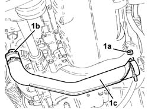
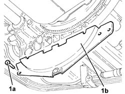
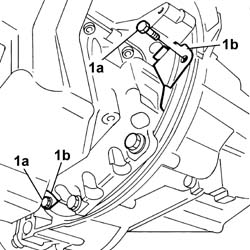

1024B54 ENGINE FLYWHEEL PROTECTION R R
- Path
- Procedures > 10 ENGINE > 1024 CRANKSHAFT AND FLYWHEEL > 1024B ENGINE FLYWHEEL > 1024B54 ENGINE FLYWHEEL PROTECTION R R
- Kind
- repair procedure (removal / refitting; the operation number is the code)
- Applies to
- engines: 2.0 16V JTD, 2.2 16V JTD; all production periods
- Interactive page
- https://sloeber94.github.io/elrnDB-fUlss/en/#/179006914
Applies to: engines: 2.0 16V JTD; all production periods
 Removing
Removing
 Refitting
Refitting- Position the vehicle on a lift.
Op. 7055B54 UNDER-ENGINE GUARD - R R
1. Undo the nut and disconnect the band (1a), disconnect the band from the turbocharger (1b) and remove the turbocharger rigid air pipe (1c).

Applies to: engines: 2.0 16V JTD; all production periods
1. Undo the retaining bolts (1a) and remove the flywheel guard (1b).

Applies to: engines: 2.0 16V JTD; all production periods
Refitting
Removing- Fit the engine flywheel guard and tighten the retaining bolts.
- Fit the rigid turbocharger air pipe and connect it to the turbocharger.
- Tighten the nut and fasten the rigid turbo air pipe to the flexible pipe using the band.
Op. 7055B54 UNDER-ENGINE GUARD - R R
- Remove the vehicle from the lift.
Applies to: engines: 2.2 16V JTD; all production periods
Removing
Refitting- Position the vehicle on a lift.
Op. 7055B54 UNDER-ENGINE GUARD - R R
1. Undo the nut and disconnect the band (1a), disconnect the band from the turbocharger (1b) and remove the turbocharger rigid air pipe (1c).
Applies to: engines: 2.2 16V JTD; all production periods
1. Undo the retaining bolts (1a) and remove the flywheel guards (1b).

Applies to: engines: 2.2 16V JTD; all production periods
Refitting
Removing- Fit the engine flywheel guards and tighten the retaining bolts.
- Fit the rigid turbocharger air pipe and connect it to the turbocharger.
- Tighten the nut and fasten the rigid turbo air pipe to the flexible pipe using the band.
Op. 7055B54 UNDER-ENGINE GUARD - R R
- Remove the vehicle from the lift.
Topics linked from this page (1)
Topics that link to this page (6)
- 1016C10 SINGLE CYLINDER HEAD - R.R. AND REPLACE GASKET
- 1016B10 SINGLE CAMSHAFT HOUSING - REPLACE GASKET
- 1020D11 CRANKSHAFT OIL SEAL FRONT COVER - R.R. REPLACE GASKET WITH TIMING BELT REMOVED - INCLUDES CLEANING MATCHING SURFACES AND APPLYING SEALANT
- 1024F30 ENGINE BALANCING SHAFTS - R.R.
- 1028H10 PISTON WITH CONNECTING ROD - R R
- 1036C10 CAMSHAFTS IN CAMSHAFT HOUSING - R.R - INCLUDES CAMSHAFT HOUSING REPLACEMENT, IF NECESSARY